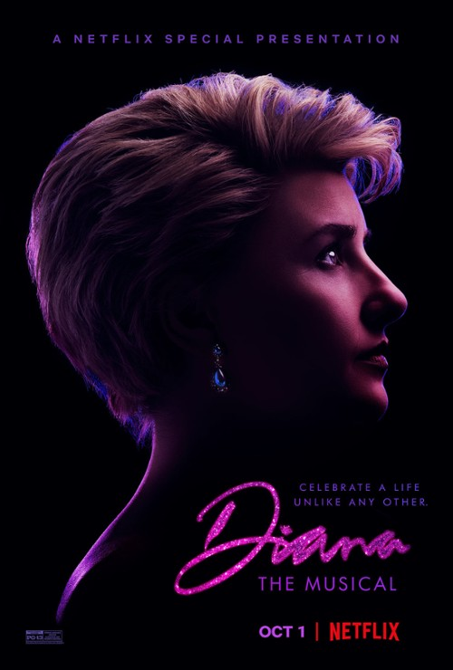
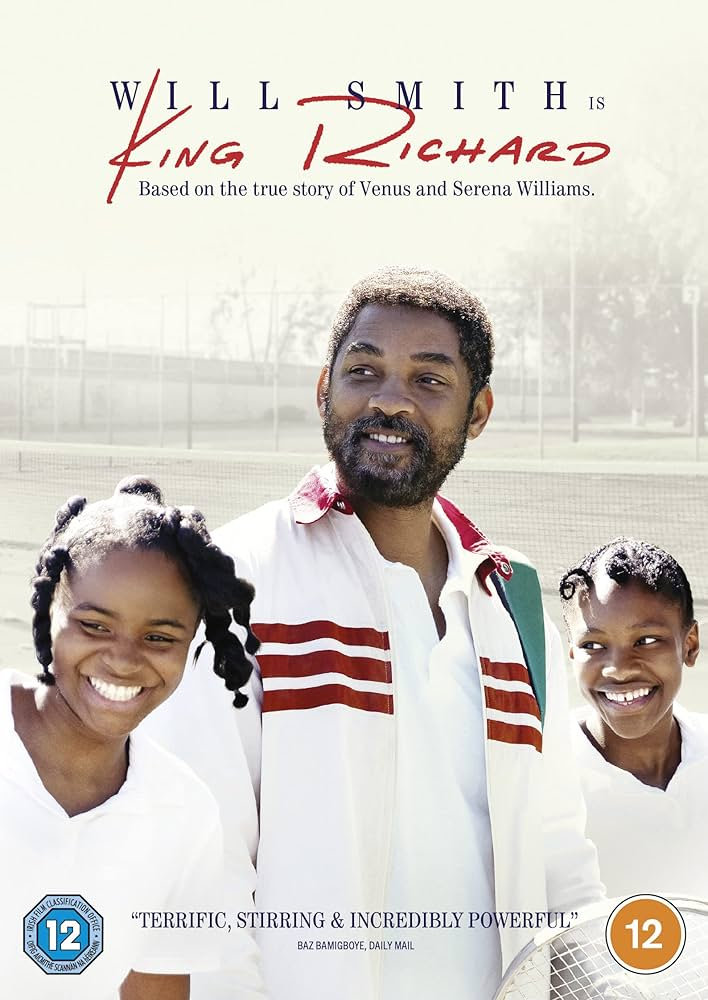

Nominacje i zwycięzcy z 2022 roku
Najgorszy film - wygrana: Diana: Musical

- W nieskończoność
- Karen
- Kosmiczny mecz: Nowa era
- Kobieta w oknie
Najgorszy aktor - wygrana: LeBron James - Kosmiczny mecz: Nowa era
Pozostałe nominacje:
- Scott Eastwood - Niebezpieczny
- Mark Wahlberg - W nieskończoność
- Roe Hartrampf - Diana: Musical
- Ben Platt - Drogi Evanie Hansenie
Najgorsza aktorka - wygrana: Jeanna de Waal - Diana: Musical
Pozostałe nominacje:
- Amy Adams - Kobieta w oknie
- Megan Fox - Po śladach mordercy
- Taryn Manning - Karen
- Ruby Rose - Uwikłana
Najgorsza aktorka drugoplanowa - wygrana: Judy Kaye - Diana: Musical
Pozostałe nominacje:
- Amy Adams - Drogi Evanie Hansenie
- Sophie Cookson - W nieskończoność
- Erin Davie - Diana: Musical
- Taryn Manning - To, na co zasłużyli
Najgorszy aktor drugoplanowy - wygrana: Jared Leto - Dom Gucci
Pozostałe nominacje:
- Ben Affleck - Ostatni pojedynek
- Mel Gibson - Niebezpieczny
- Nick Cannon - Elita złodziei
- Gareth Keegan - Diana: Musical
Najgorszy reżyser - wygrana: Christopher Ashley - Diana: Musical
Pozostałe nominacje:
- Damon 'Coke' Daniels - Karen
- Joe Wright - Kobieta w oknie
- Stephen Chbosky - Drogi Evanie Hansenie
- Renny Harlin - Elita złodziei
Najgorszy scenariusz - wygrana: Diana; Musical
Pozostałe nominacje:
- Kobieta w oknie
- Karen
- Elita złodziei
- Elita
Nagroda Odkupienia: Will Smith - King Richard: Zwycięska rodzina

Pozostałe nominacje:
- Nicolas Cage - Świnia
- Jamie Dornan - Belfast
Najgorszy prequel, remake, "zrzynka" lub sequel - wygrana: Kosmiczny mecz: Nowa era
Pozostałe nominacje:
- Karen
- Tom i Jerry
- Kobieta w oknie
- Twist
Najgorsze combo - wygrana: LeBron James i dowolna animowana postać Warnera (lub produkt Warnera), na którą się poci - Kosmiczny mecz: Nowa era
Pozostałe nominacje:
- Jared Leto i którakolwiek z tych rzeczy: 17-funtowa lateksowa twarz, ubrania lub śmieszny akcent - Dom Gucci
- Ben Platt i którakolwiek z postaci, która udaje, tak jak Ben Platt, że śpiewanie 24/7 jest normalne - Drogi Evanie Hansenie
- Tom i Jerry - Tom i Jerry
- Dowolna osoba z obsady i dowolna scena śpiewana (lub choreografia) - Diana: Musical